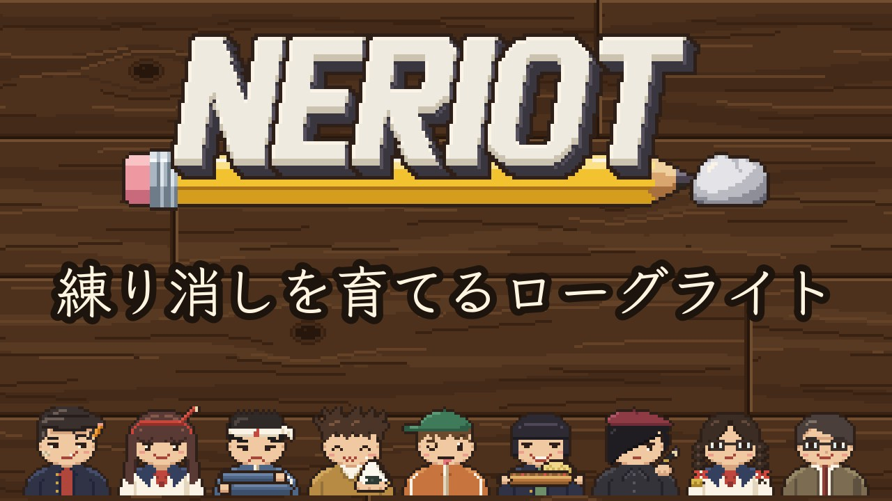

GAME
NERIOT
NERIOT（ねりオット）
休み時間に、練り消しを育てていたあの感じ。

| ジャンル | 練り消しを育てるローグライト |
|---|---|
| プレイ時間 | 1回15分ほど |
| 制作ツール | TypeScript ／ Electron |
| 公開日 | 2026.10.31 |
| 動作環境 | パソコン・スマホのブラウザ、Windows |
| 言語 | 日本語 ／ English |
▶ itch.io で遊ぶ
itch.io のページで、ダウンロードせずにブラウザでそのまま遊べます。動きが重いときは、同じページから Windows 版をダウンロードしてください。無料で遊べます（気に入ったら寄付もできます）。
どんなゲーム？
休み時間は30秒。落書きを消しゴムでこすって、出た消しカスをねりけしで集めます。放課後の計量では、筆箱の文房具の倍率がかかって、ねりけしはどんどん重くなります。金曜までに番長のノルマに届かなければ、ねりけしは没収。1学期を勝ち抜けるか、くり返し挑むローグライトです。
遊び方
- 休み時間（30秒）に、消しゴムで落書きを消す。消すと消しカスが出る
- ねりけしで消しカスを拾うと、ねりけしが重くなる。金のカスが出る日もある
- 放課後の計量で、筆箱の文房具の倍率がかかる。並べる順番や組み合わせでも変わる
- 金曜までに番長のノルマを超えたら、ねりけしを献上して次の週へ。購買と没収品で、筆箱をそろえていく
- 4週目の金曜に合格すれば、その学期は勝ち。負けても黒鉛が残り、文房具屋で次の回の準備ができる
操作
- 消しゴムで消す：左クリック（スマホは紙をなぞる）
- ねりけしでカスを拾う：右クリック（スマホはねりけしを触る、または「ねりけし」ボタン）
- 一時停止：Esc